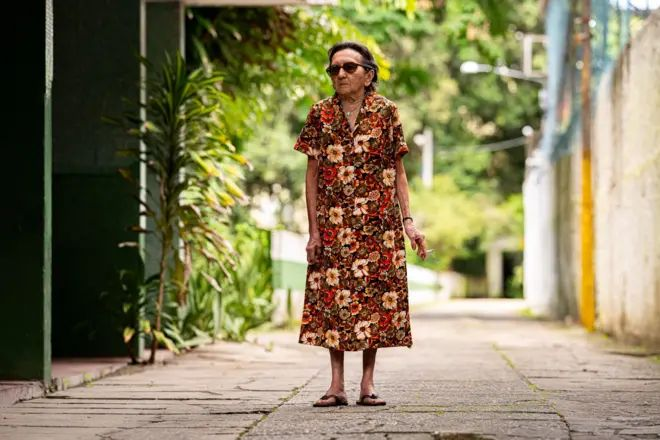
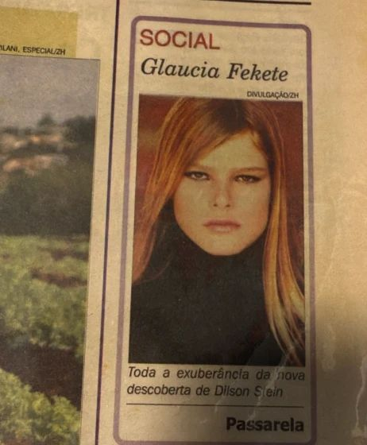
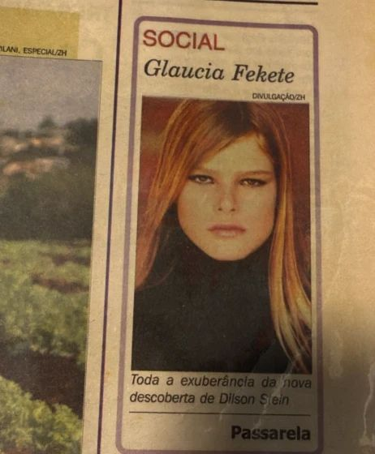

Brazilian model escaped Epstein recruiter because of her mother
Modelo brasileira escapou de recrutador de Epstein por causa da mãe
A life-changing moment in 2004
Um momento que mudou tudo em 2004

"If I had disobeyed my mother and gone to New York, what would have happened to me?"
"Se eu tivesse desobedecido a minha mãe e ido para Nova York, o que será que teria acontecido comigo?"
This question has haunted Gláucia Fekete for years. In 2004, when the Brazilian woman from Rio Grande do Sul was 16 years old and starting her career in fashion modeling, she was invited to participate in a modeling competition in Ecuador.
Esta pergunta ronda há anos a cabeça de Gláucia Fekete. Em 2004, quando a gaúcha tinha 16 anos e dava os primeiros passos para tentar a carreira na moda, ela foi convidada a participar de um concurso de modelos no Equador.
The competition offered a $300,000 prize and promised international contracts. She would leave there and go directly to work in New York.
A competição oferecia um prêmio de US$ 300 mil e a promessa de contratos internacionais. Ela sairia de lá direto para trabalhar em Nova York.
But her mother, Bárbara Fekete, became suspicious.
Mas a mãe dela, Bárbara Fekete, ficou desconfiada.
To convince Bárbara, the competition creator, Frenchman Jean-Luc Brunel, decided to visit the family's home himself in the interior of Rio Grande do Sul.
Para convencer Bárbara, o criador do concurso, o francês Jean-Luc Brunel, decidiu fazer ele mesmo uma visita à casa da família no interior do Rio Grande do Sul.
Brunel was a model agent who years later would be accused of being a recruiter for sex offender Jeffrey Epstein. Brunel, close to Epstein since at least the 1980s, would himself be accused of raping and harassing women and was arrested in France in 2020. He died in prison in 2022 without having been tried.
Brunel era o agente de modelos que anos depois seria acusado de ser um aliciador de meninas ligado ao criminoso sexual Jeffrey Epstein. Brunel, próximo a Epstein ao menos desde os anos 1980, seria ele mesmo acusado de estuprar e assediar mulheres e preso na França em 2020. Morreu em 2022 na cadeia, sem ter sido julgado.
"Did I raise my children with so much love and care just to hand them over to someone I don't know?"
"Criei meus filhos com tanto amor e carinho e aí vou largar na mão de quem eu não conheço?"
The mother's instinct
O instinto da mãe

Gláucia Fekete began her modeling career at age 13, discovered by scout Dilson Stein, nationally famous for having discovered supermodel Gisele Bündchen.
Gláucia Fekete começou a carreira de modelo aos 13 anos, descoberta pelo olheiro Dilson Stein, famoso nacionalmente por ter revelado a modelo Gisele Bündchen.
According to Gláucia, it was Stein who brought the idea of the Ecuador competition to her family and introduced her to Jean-Luc Brunel, who at that time in 2004 was not under police investigation.
De acordo com Gláucia, foi Stein quem trouxe a ideia do concurso no Equador à família e a apresentou a Jean-Luc Brunel, que naquele ano do concurso, 2004, não era alvo de investigação policial.
Bárbara's initial reaction was to distrust the invitation for her daughter. Part of her resistance also came from a previous experience, when her daughter tried to pursue a career in São Paulo and faced financial difficulties.
A reação inicial de Bárbara foi desconfiar do convite para a filha. Parte da resistência também vinha de uma experiência anterior, quando a filha tentou carreira em São Paulo e enfrentou problemas por falta de dinheiro.
"She didn't want me to get involved with that anymore," Gláucia recalls.
"Ela não queria que me envolvesse mais com isso."
To convince Bárbara, Brunel promised that it was guaranteed Gláucia would win the competition prize—$300,000—and that the trip would bring professional returns.
Para convencer Bárbara, Brunel teria prometido que estava garantido que Gláucia seria a vencedora do prêmio do concurso — US$ 300 mil dólares, segundo notícias publicadas em jornais locais — e que a viagem traria retorno profissional.
"My mother at first thought he was very likable, because he spoke very little Portuguese, but whenever he spoke you could sense it was spontaneous and natural," Gláucia said, adding that throughout their conversations the Frenchman talked about the opportunity of having her career represented by him.
"Minha mãe no início achou ele muito simpático, porque ele falava pouco o português, mas o tempo todo que ele falava tu percebia que era uma coisa espontânea e natural", contou Gláucia, acrescentando que a todo tempo o francês falava da oportunidade que era ter a carreira representada por ele.
Despite her reservations, Gláucia's mother eventually agreed to the trip, but she did not accompany her daughter.
Apesar das ressalvas, a mãe de Gláucia acabou concordando com a viagem, mas não a acompanhou.
The competition and unusual behavior
O concurso e comportamentos estranhos

In Ecuador, Gláucia recalls that the competition's first days went without major incidents. She remembers there were at least three other Brazilians participating in the event, including Aline Weber, who won the competition.
No Equador, Gláucia conta que os primeiros dias do concurso correram sem grandes sobressaltos. Ela lembra que havia pelo menos outras três brasileiras que participaram do evento, incluindo Aline Weber, que venceu a competição.
There was also another Brazilian girl, whom Gláucia believes was underage at the time and who was presented as "Jean-Luc's girlfriend," not participating in the competition and just there to accompany him.
Havia também outra garota brasileira, que Gláucia acredita que fosse menor de idade à época e que era apresentada como "namorada do Jean-Luc", que não participaria do concurso e estava lá apenas para acompanhá-lo.
A European model who also participated in the event, also 16 at the time, told the BBC News Brasil about observing Brunel's unusual behavior. When Brunel circulated around the hotel and groups of competitors, he would repeatedly say: "Ah, and the Brazilian girls! My God, the Brazilian girls! All the time..."
Uma modelo europeia que também participou do evento, que na época também tinha 16 anos, contou à BBC News Brasil sobre observar comportamentos estranhos de Brunel. Sempre que ele circulava pelo hotel e grupos de competidoras, ele dizia: "Ah, e as brasileiras! Meu Deus, as brasileiras! O tempo todo..."
The European model, who spoke on the condition that her name not be revealed and will be called Laura here, described the trip as very well organized: "All of us flew to Ecuador and had a group of local women constantly with us, since many of the girls were under 18, some even under 16."
A ex-modelo europeia, que fez relato semelhante, descreveu que "A viagem foi super bem organizada. Todas nós voamos para o Equador e tivemos um grupo de mulheres locais que estavam constantemente conosco, já que muitas das meninas tinham menos de 18 anos, algumas até menos de 16".
Laura said everything seemed "professional" and "legitimate," except for Jean-Luc Brunel's behavior, who acted like a "clown" who only went out with young girls, especially Brazilian ones.
Laura diz que tudo parecia "profissional" e "legítimo", exceto Jean-Luc Brunel, que se comportava como um "palhaço", que só saía com meninas jovens, especialmente brasileiras.
"Even though we were young (I was 16), we realized his behavior was strange and he was always going out with the young Brazilian girls."
"Nós, apesar de sermos jovens (eu tinha 16 anos), percebemos que era estranho o modo como ele se comportava e estava sempre saindo com as jovens brasileiras."
Laura observed that girls from wealthy countries like herself did not appear to be Brunel's target, and girls in more vulnerable situations could have been targeted. Looking back today, she says it makes complete sense: "There were so many red flags. He knew exactly which girls were vulnerable. He seemed to control their finances."
Laura avaliou que meninas vindas de países ricos como ela não pareciam ser alvo de Brunel, e que garotas em situação mais vulnerável poderiam ter sido aliciadas. "Sabendo o que eu sei hoje, faz completo sentido. Havia tantos indícios. Ele [Brunel] sabia exatamente quais meninas eram vulneráveis. Ele parecia controlar as finanças delas."
"The girls from Brazil and Eastern European countries seemed to be the main target," she continued.
"As meninas do Brasil e dos países do leste europeu pareciam ser o alvo principal."
The rejection and the mother's intervention
A rejeição e a intervenção da mãe

Despite the initial guarantee that she would win the competition, Gláucia was warned while still in Ecuador that the situation had changed. The justification was that she had "two or three centimeters of hip width above the permitted" and therefore would no longer receive any prize.
Apesar da suposta garantia inicial de que venceria o concurso, Gláucia foi avisada, já no Equador, que a situação tinha mudado. A justificativa é que estava com "dois ou três centímetros de quadril acima do permitido" e, por isso, não teria mais prêmio algum.
She began to become suspicious that something might be wrong when she realized she couldn't communicate with her family during the trip.
Ela começou a desconfiar que podia haver algo errado quando percebeu que não conseguia se comunicar com a família enquanto durou a viagem.
The arrangement before departure was that there would be constant calls and video messages to the family. She had no cell phone of her own and no access to phone calls at the time.
O combinado antes do embarque, diz, é que haveria ligações constantes e envio de vídeos para a família. Ela não tinha celular próprio e nem acesso a ligações na época.
Before returning, Gláucia received a proposal to travel with Brunel to the USA with all expenses paid. The stated goal was to "participate in shows."
Antes de voltar, Gláucia recebeu a proposta de viajar com Brunel aos EUA com tudo pago. O objetivo seria "participar de shows".
"The idea was planted in my mind that I would leave there and go directly to New York to participate in castings there. I just needed my mother's authorization."
"Foi plantada pra mim a ideia de que eu sairia de lá e iria direto para Nova York, para participar de castings por lá. Só precisava de autorização da minha mãe."
When her mother learned of this, she firmly refused: "No. Absolutely not."
A mãe negou o pedido na hora que soube. "Não. Nem pensar."
Gláucia felt deceived by the organizers. "I left Brazil, spent all that time working and didn't receive any money. For me it was a question mark."
Gláucia diz que se sentiu enganada pelos organizadores. "Saí do Brasil, fiquei esse tempo todo trabalhando e não recebi nenhum dinheiro. Pra mim ficou um ponto de interrogação."
She remembers that after the episode her mother prohibited her from continuing a career as a model. "She broke all ties with that network. She told me to finish my studies and do what I wanted after."
Ela lembra que depois do episódio sua mãe a proibiu de seguir carreira como modelo. "Ela quebrou todo o vínculo com essa rede. Me disse para terminar meus estudos e fazer o que eu quisesse depois."
The former model, who today works in mentoring and digital strategy, only understood what she had been involved with years later when she learned who Jeffrey Epstein was and his connection to Brunel through journalists from the Miami Herald newspaper who approached her while investigating the case.
A ex-modelo, que hoje trabalha com mentoria e estratégia digital, só foi entender no que se envolveu há alguns anos, quando soube quem era Jeffrey Epstein e sua ligação com Brunel por meio de jornalistas do jornal americano Miami Herald, que a procuraram quando investigavam o caso.
"My mother saved me."
"Minha mãe me salvou."
Epstein was in guayaquil the day before the final
Epstein estava em guayaquil um dia antes da final

Neither Gláucia nor Laura remember seeing Epstein or being introduced to him during the competition days in Ecuador. However, files released by authorities show that Epstein was in Guayaquil during the same period, although there is no mention of the competition in the papers.
Nem Gláucia nem Laura se lembram de ter visto Epstein ou terem sido apresentadas a ele durante os dias de concurso no Equador. Os arquivos divulgados pelas autoridades mostram, no entanto, que Epstein esteve em Guayaquil na mesma época, embora não haja qualquer citação ao concurso nos papéis.
An email released by the U.S. government shows that Ghislaine Maxwell, Epstein's accomplice and currently imprisoned in the U.S., said she and the billionaire would go to the city and that they needed to refuel an aircraft on August 24, 2004—the day before the competition final was held.
Um dos e-mails divulgados pelo governo americano mostra que Ghislaine Maxwell, cúmplice de Epstein e atualmente presa nos EUA, diz que ela e o bilionário iriam à cidade e que precisavam abastecer uma aeronave no dia 24 de agosto de 2004 — a final do concurso foi realizada no dia seguinte.
Another email from Larry Visoski, Epstein's pilot, states: "We went to: August 24, 2004, Guayaquil, Ecuador."
Outro e-mail enviado por Larry Visoski, piloto de Epstein, diz: "Nós fomos para: 24 de agosto, 2004, Guayaquil, Equador".
There are also messages about hotel and van reservations in the city, also from August of that year.
Há ainda mensagens sobre a reserva de um hotel e de uma van na cidade, também em agosto do mesmo ano.
In June 2010, in a statement to the Florida court, Maritza Vasquez, a former employee of Jean-Luc Brunel's MC2 agency (which Epstein invested in), stated that when Epstein was in the South American country, Brunel "brought girls" to him, according to an account she heard from a Brunel employee who was one of the organizers of the modeling competition.
Em junho de 2010, em um depoimento feito à Justiça na Flórida, uma ex-funcionária da agência MC2, Maritza Vasquez, afirma que, quando Epstein foi ao país sul-americano, Brunel lhe "levou garotas", segundo relato que ouviu de um funcionário do agente, que era um dos organizadores do concurso de modelos.
BBC News Brasil also identified, in the files released by the U.S. government, email exchanges between FBI agents about another woman, whose name was not disclosed, who said she had spoken with this same Brunel employee and who would confirm the use of the modeling agency as a front to obtain underage girls for Epstein and for Brunel himself.
A BBC News Brasil também identificou, nos arquivos divulgados pelo governo americano, trocas de e-mails entre agentes do FBI sobre uma outra mulher, de nome não divulgado, que disse ter conversado com esse mesmo funcionário de Brunel e que confirmaria o uso da agência de modelos como fachada para obter garotas menores de idade para Epstein e para o próprio Brunel.
Brunel the model agent
Brunel como agente de modelos

In the early 2000s, the Models New Generation was Brunel's agency's big bet to attract models from other countries.
No começo do dos anos 2000, o Models New Generation foi a grande aposta da agência de Brunel para atrair modelos em outros países.
When he applied for an O-1 visa in the United States in 2014, aimed at foreign nationals claiming to be leaders in their fields, Brunel defended the relevance and visibility of the event as a way to prove his professional capabilities.
Quando aplicou para um visto O-1 nos Estados Unidos, em 2014, voltado a estrangeiros que argumentam ser referências em suas áreas de trabalho, Brunel defendeu a relevância e visibilidade do evento como forma de comprovar suas capacidades profissionais.
Brunel highlighted in the document that the competition "was broadcast by various television channels," including by Rede Globo, "the largest and most popular television network in Brazil."
Brunel destaca no texto que o concurso "foi transmitido por diversos canais de televisão", inclusive pela TV Globo, "a maior e mais popular rede de televisão do Brasil".
The BBC News Brasil confirmed with RBS that there was coverage at the time. "We have a record of a report about the competition aired in September 2004, highlighting the participation of Brazilian competitors, including a girl from Santa Rosa," the company said.
A BBC News Brasil confirmou com a RBS que houve cobertura à época. "Temos o registro de uma reportagem sobre o concurso veiculada em setembro de 2004, destacando a participação das concorrentes brasileiras, entre elas uma gaúcha de Santa Rosa", diz a empresa.
The document sent to the U.S. government also states that Brunel promoted and participated in the judging of other modeling competitions in South America, in countries such as Peru, Ecuador, Brazil, Argentina, and Chile.
O documento enviado ao governo americano afirma ainda que Brunel promoveu e participou do júri de outros concursos de modelos na América do Sul, em países como Peru, Equador, Brasil, Argentina e Chile.
Key events in the ecuador competition
Eventos-chave do concurso no equador
Understanding the magnitude of the escape
Compreendendo a magnitude do escape

It was through the Miami Herald's 2019 reports, with victim testimonies, that Gláucia learned who Jeffrey Epstein was and his connection to Brunel. Those reports contributed to reopening investigations against the sex criminal, who had previously closed a deal to end his case. Imprisoned again, Epstein would die in his cell in 2019.
Foram as reportagens do jornal Miami Herald em 2019, com depoimentos de vítimas, que Gláucia soube quem era Jeffrey Epstein e sua ligação com Brunel. Essas reportagens contribuíram para reabrir as investigações contra o criminoso sexual, que até então tinha fechado um acordo para encerrar seu caso. Preso novamente, Epstein morreria na cadeia no mesmo ano.
Gláucia's mother only learned what happened with Brunel and the accusations against him after the BBC News Brasil contacted her, which led her family members to explain the case to her.
Já a mãe de Gláucia só soube do que aconteceu com Brunel e das acusações contra ele após o contato da BBC News Brasil, o que levou seus familiares a lhe explicar o caso.
"I had something in my head, that this wasn't something right. It couldn't be. They were looking for children, minors," said Bárbara. "Unfortunately they found my daughter."
"Eu tinha uma coisa na minha cabeça, que isso não era coisa certa. Não poderia ser. Procuravam só crianças, menores", disse Bárbara. "Infelizmente acharam a minha filha."
When thinking about her mother's decision that prevented her from traveling to the USA with Brunel, Gláucia today is grateful. At 38 years old, she reflects on having been "in the middle of that whole hurricane" without knowing it.
Ao pensar na proibição da mãe que a impediu de ir aos EUA com Brunel, hoje Gláucia é grata. Aos 38 anos, ela reflete sobre ter estado "no meio desse furacão todo" sem saber.
"It was truly a deliverance," she says.
"Realmente foi um livramento", diz ela.